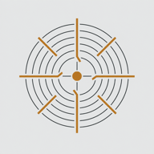

Percussion synthesizer

BATTUTA 8
A percussive instrument built around two wide-range oscillators, fast independent envelopes and an eight-step pitch-and-velocity sequencer designed for animated rhythmic sound.
Two wide-range oscillators, noise, one-shot envelopes and a resonant filter form a percussive voice that can be played directly or driven by its eight-step pitch-and-velocity sequencer. Patch I/O lets the same machine act as drum voice, modulation source or compact CV sequencer.
- Dual oscillators + noise / external audio
- Independent VCO / VCF / VCA envelopes
- 8-step pitch + velocity sequencer
- 24-socket patch system
- Pitch / velocity / trigger outputs
Desktop VST3 + standalone for Mac and Windows: Get the desktop version · Watch the Ableton Live demo
BATTUTA 8 videos: Gavinski’s walkthrough · Official 60-second demo.
Available now
- Targets
- iPhoneiPad
- Formats
- StandaloneAUv3
- Beta
- Android
- Desktop
- VST3 · Windows + macOS